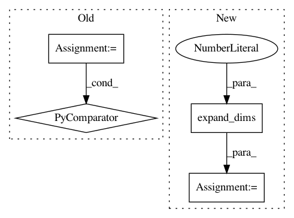

79edae58d5892c5a7eb19b68f9e79dfae4682e20,keras/backend/tensorflow_backend.py,Function,__call__,#Function#Any#,970
Before Change
def __call__(self, inputs):
assert type(inputs) in {list, tuple}
names = [getattr(v, "name", None) for v in self.inputs]
feed_dict = dict(zip(names, inputs))
session = get_session()
updated = session.run(self.outputs + [self.updates_op], feed_dict=feed_dict)
After Change
for tensor, value in zip(self.inputs, inputs):
if is_sparse(tensor):
sparse_coo = value.tocoo()
indices = np.concatenate((np.expand_dims(sparse_coo.row, 1), np.expand_dims(sparse_coo.col, 1)), 1)
value = (indices, value.data, value.shape)
feed_dict[tensor] = value
session = get_session()
updated = session.run(self.outputs + [self.updates_op], feed_dict=feed_dict)
return updated[:len(self.outputs)]
In pattern: SUPERPATTERN
Frequency: 3
Non-data size: 4
Instances
Project Name: keras-team/keras
Commit Name: 79edae58d5892c5a7eb19b68f9e79dfae4682e20
Time: 2016-09-09
Author: kuza55@gmail.com
File Name: keras/backend/tensorflow_backend.py
Class Name: Function
Method Name: __call__
Project Name: GPflow/GPflow
Commit Name: 5809cb0b339612434f4f332a91a2cd3e4570c34d
Time: 2018-02-26
Author: james@prowler.io
File Name: gpflow/transforms.py
Class Name: LowerTriangular
Method Name: backward_tensor
Project Name: dmlc/gluon-cv
Commit Name: 447c8e87ea3b270d0b3404ad962032752cfbc0ab
Time: 2020-04-22
Author: zhangz6@cs.washington.edu
File Name: gluoncv/nn/splat.py
Class Name: SplitAttentionConv
Method Name: hybrid_forward